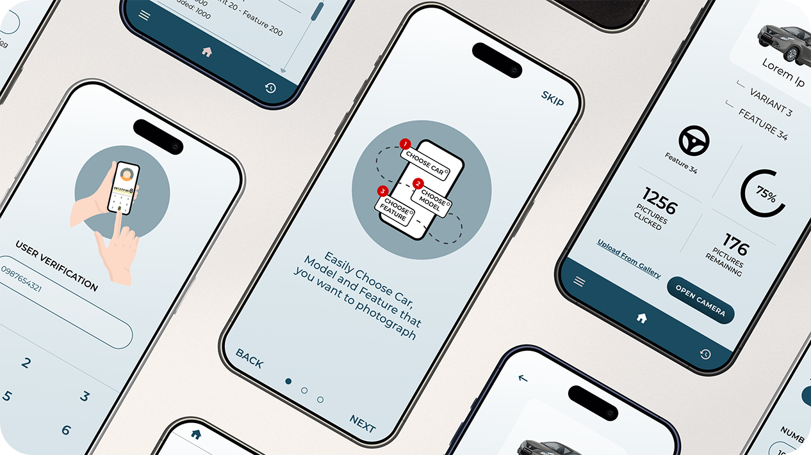

Deliverables
User flows
Wireframes
Final UI designs
Illustrations

Xane AI | Designed in 2020
TDC
Visual strategy for a mass image gathering mobile app to train an LLM
Overview
TDC is a mass image gathering app for a car manufacturer, developed by my client Xane AI. These images create a database to train an LLM used in another app, for the same car manufacturer.
My Role
As a UI and UX designer, I worked on the user experience, UI designs and illustrations closely with the Founders, CEO and CTO, and developers to build the MVP.
Deliverables
User flows
Wireframes
Final UI designs
Illustrations
Organization Goals
Easy Car Self Diagnosis
To create a mobile app that would enable their customers to be able to self diagnose any problems with their car using AI.
Quick Problem-Solving
Take a picture, recognise the part, diagnose the problem and show possible solutions to the customer.
Custom Dataset
To create and leverage an LLM for the diagnostic tool.

My Process
The client had a good idea of the functionality of the product. I started the design journey by gaining a deeper understanding of the solution that the client wanted to execute as well as the user's requirements.
In order to have a self diagnosing app, the AI (developed by Xane AI) would first have to be trained with hundreds of thousands of images of every car part according to the car models and various variants.
This would be achieved by uploading all of those images of various car models, variants and specific parts in an organised manner.
This is where TDC comes in. TDC would enable the employees of the car manufacturer to click and upload images required to train the AI model.
The major challenge was to develop an app that could be easily used by employees of the car manufacturer across a country as vast and culturally diverse as India. The secondary challenge was to make the method of mapping pictures to various cars (and their parts) easy and error free. The app had to be very easy to navigate through in order to get accurate data to train the AI model.
User Type
The typical user of this product is an employee of the car manufacturer, one that works in a repair/service stations and in the factory.
Designation
An assembly line employee or a mechanic
Vehicular Knowledge
Knows the ins and outs of the vehicles
Age Group
Is in the 20s age group
Education
No higher education
English Skills
Has basic understanding of English
An educated assumption was made that the target user is also familiar with WhatsApp and Facebook due to their prolific usage amongst smartphone users in India. Thus ensuring that the user has enough understanding of navigating within an app.
The challenge of the app would be to make it easy enough for the user to navigate to get accurate data to train the AI model, as fast as possible.
A Linear Approach
The first step was to map out the journey of the user and to keep the number of steps, required to achieve the goal, as low as possible.
I sat with the client to understand the steps that had to be taken to reach the end goal, which essentially was to click and upload pictures of different parts of the car. In order to make the users achieve the goal that was required, we had to make the process linear and airtight.
Since TDC is intended only for the selected employees of the car manufacturer, there was no need for a sign-up process. The manufacturer loads the app onto the employee’s work phones as required. Sign in is done via phone number and a SMS based OTP verification.

The app was intended only for Android based devices and was designed based
on Material Design 2 Guidelines.
The app uses a very simple colour scheme, keeping the focus entirely on the core aspects of the app. The
colours used follow WCAG Guidelines maintaining contrast ratios to maintain visual accessibility.
Clear Communication Through Illustrations
Illustrations are used in a few places such as in onboarding and sign in to add a visual element which helps in understanding the features of the app.
Other Projects

Namma Clean Bangalore
Empowering citizens and government bodies to keep their city clean together
View
Namma Clean Bangalore
Empowering citizens and government bodies to keep their city clean together
View
Namma Clean Bangalore
Empowering citizens and government bodies to keep their city clean together
View